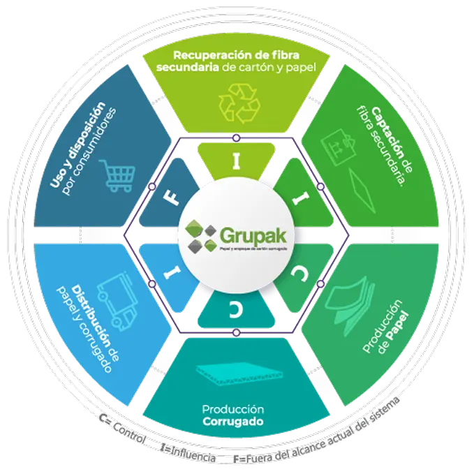

Recuperación de fibra
Nosotros recolectamos de manera directa papel y cartón usados que todavía pueden aprovecharse. Esta materia prima viene de proveedores evaluados para asegurar calidad.
En Grupak desarrollamos nuestras operaciones con un enfoque de producción responsable, promoviendo el uso eficiente de los recursos y la reducción de los impactos ambientales en nuestros procesos, incorporando principios de economía circular.
Nuestro modelo prioriza el uso de fibra reciclada, la gestión responsable del agua y los residuos, así como la eficiencia energética en la producción de papel y empaques. A través de este enfoque, recuperamos papel y cartón posconsumo, lo transformamos en nuevos productos y lo reincorporamos nuevamente al ciclo productivo.
La gestión ambiental de nuestras operaciones está respaldada por la certificación ISO 14001:2015 y por la certificación de cadena de custodia del Forest Stewardship Council (FSC®), que garantiza el origen responsable de los materiales que utilizamos.

Nosotros recolectamos de manera directa papel y cartón usados que todavía pueden aprovecharse. Esta materia prima viene de proveedores evaluados para asegurar calidad.
Recibimos la fibra recuperada, la clasificamos y revisamos que cumpla con lo necesario para fabricar papel nuevamente.
La fibra se limpia, se procesa y se convierte en nuevo papel. Luego se seca, se enrolla y se prepara en bobinas listas para usarse.
El papel se combina para formar el cartón corrugado. Aquí se definen sus propiedades y se fabrican en láminas o cajas según lo que necesite el cliente.
El papel, láminas o cajas terminadas se almacenan, se revisan y se envían a los clientes de acuerdo con sus pedidos.
Los clientes usan los empaques. Después, el material puede recuperarse nuevamente para reiniciar el ciclo.
En 2025 recuperamos 273,007 toneladas de cartón como materia prima. Esto nos permitió utilizar papel 100% reciclado en nuestros procesos principales, evitando la tala de 4.6 millones de árboles y el uso de 682,000 m3 de espacio en rellenos sanitarios, un volumen comparable con 272 albercas olímpicas.